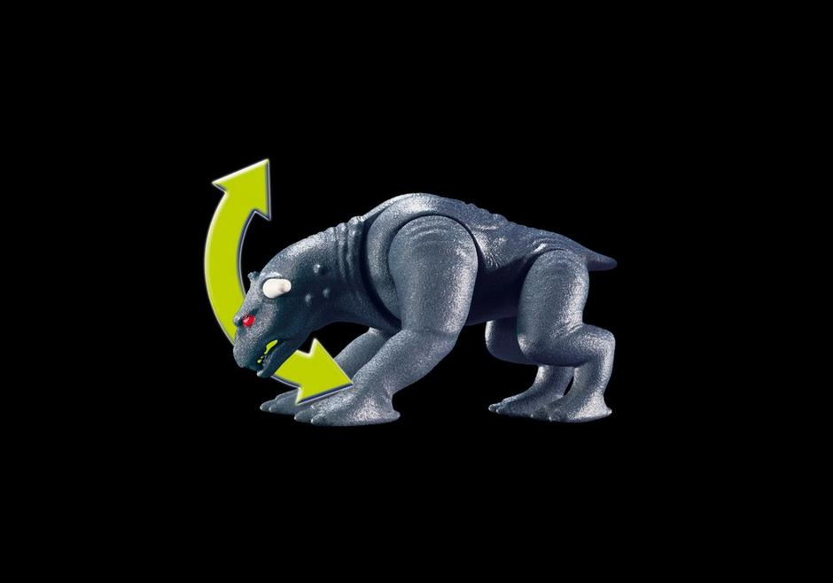
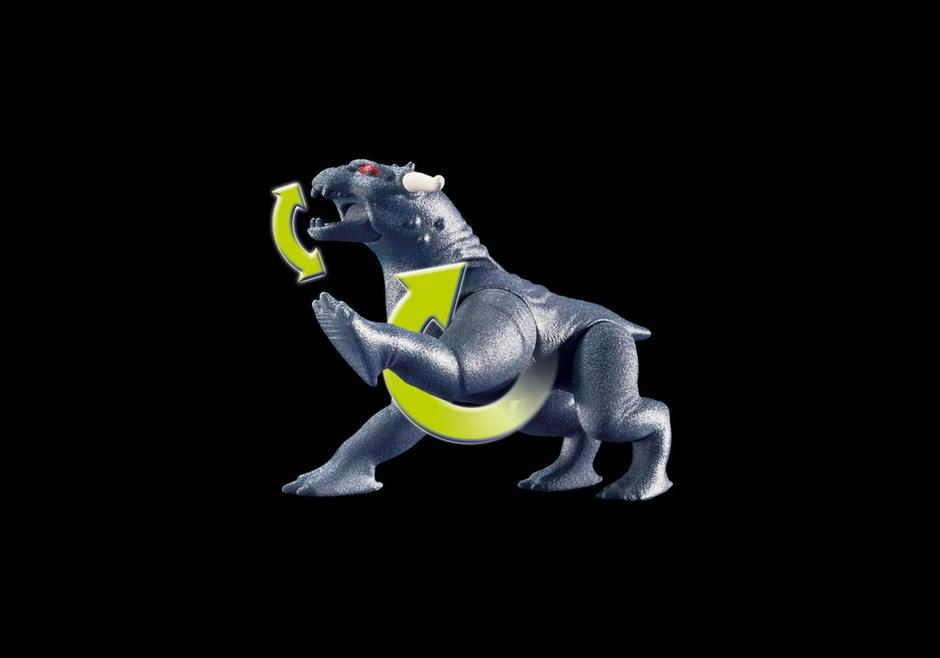
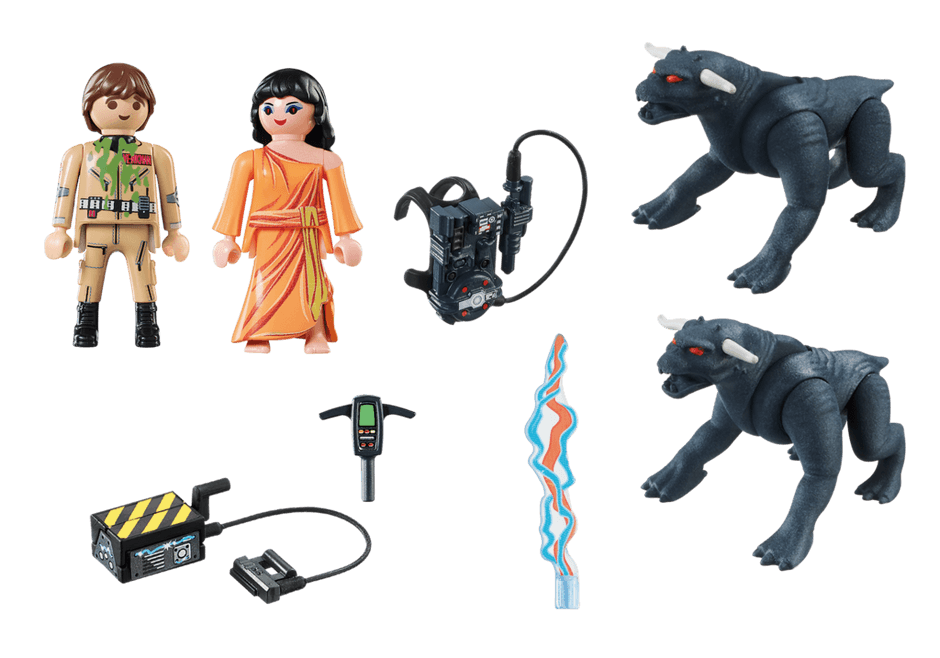

Venkman et les Chiens de la Terreur
Description
Avec Dana Barrett, et sa transformation en "Zuul, Le cerbère de la porte" ainsi que Peter Venkman, héros Ghostbusters !
Dimensions
7,2 x 14,2 x 18,7 cm (LxDxH)
Convient aux enfants de plus de 6ans.
Liste exhaustive des objets disponibles :
- – Les têtes des chiens de ténèbres sont mobiles de haut en bas, leurs pattes et leur mâchoire aussi.
- - Autres accessoires : sac à dos Proton Pack et arme à Proton, piège à fantôme et détecteur PKE pour détecter l'énergie paranormale des fantômes.


